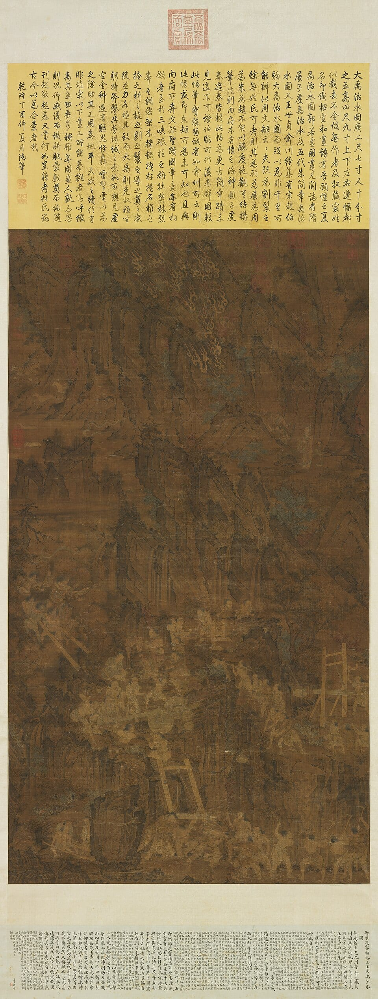
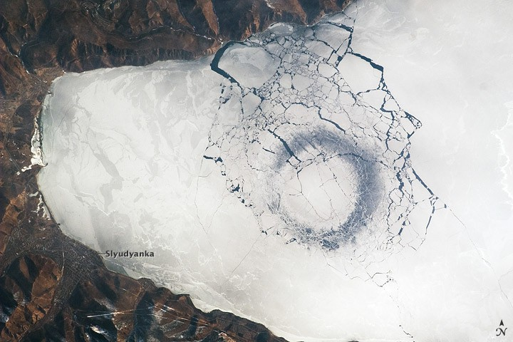
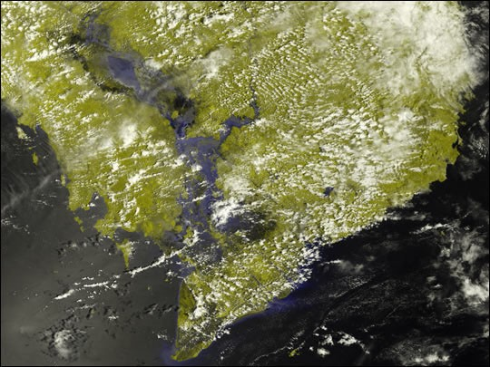
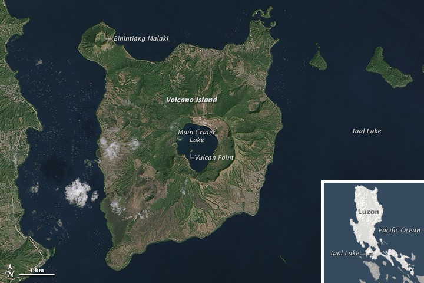
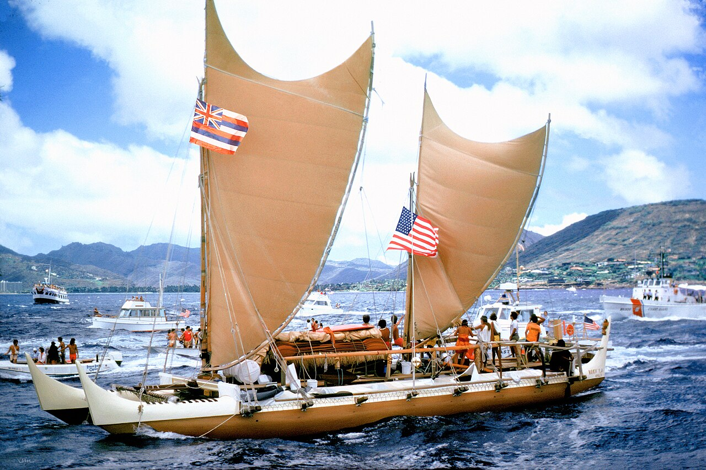

Plato: knowledge by illumination
SUNIn the Republic, the Good is compared to the sun: it makes sight and knowledge possible. Truth arrives as clarity, ascent, and illumination.
Read the sun analogyFRST 110 · 2024–27 shared theme
Not water as scenery. Water as teacher, route, archive, livelihood, infrastructure, and struggle. This course begins with six shared works—and lets them flow into a much larger world.
Begin with a disagreement
Western philosophy often reaches upward for light. Early Chinese thought asks what we can learn from yielding, descending, nourishing, and wearing away stone.
In the Republic, the Good is compared to the sun: it makes sight and knowledge possible. Truth arrives as clarity, ascent, and illumination.
Read the sun analogyThe Daodejing says the “highest good is like water”: it benefits the ten thousand things without contending and stays in the low places others avoid. The soft overcomes the hard.
Read chapters 8 & 78
A Chinese flood story
Before Yu, the legend says, Gun tried to contain the flood with barriers. The barriers failed. Yu dredged channels and opened settled routes to the sea. Order came not from freezing water in place, but from working with its tendencies.
This is also a theory of government: good rule requires attention to terrain, season, force, and relation. But no hydraulic wonder is magic. It is built and maintained by labor.
Who dug the channels? Who maintains them? Who eats because the water arrives?
Follow the lines
Basins ignore borders. Rivers gather mountains, farms, factories, cities, sewage, ritual, law, and labor—then carry all of it downstream.
An inland sea engineered for commerce—and a living relation far older than either nation.
River labor, levees, blues, oil, dispossession, and the uneven catastrophe of Katrina.
The world’s largest river by discharge: forest, atmosphere, Indigenous territory, and extraction.
A continental artery and the world’s deepest measured river.
Floodplain, food system, sacred geography, imperial route, and contested dammed flow.
Sacred rivers meet one of Earth’s largest, most populous, and most mobile deltas.
A working water system that redirects flow without a conventional dam.
A lake whose connecting river reverses direction when the monsoon arrives.
More than 1.6 kilometers deep, ancient, ice-ringed, and alive with endemic species.
An island in a lake on an island in a lake on an island. Yes, really.
A node in a sea of islands, not a speck stranded in an empty Pacific.
River, transport corridor, food system, industrial engine, and field of state power.
Hydrology gets weird
The planet is full of waters that reverse, nest, freeze into circles, end in deserts, or connect systems our maps teach us to keep apart.

More than 1.6 kilometers deep and roughly 25 million years old, Baikal holds close to one-fifth of Earth’s unfrozen freshwater. From orbit, astronauts have photographed enormous dark rings forming in its spring ice.

In the dry season, the Tonlé Sap River drains the lake toward the Mekong. When monsoon water swells the Mekong, the current reverses and refills the lake. Direction itself becomes seasonal.
Mekong River Commission
islandin a lake on anislandin a lake on anisland
Vulcan Point sits in Main Crater Lake, on Volcano Island, in Taal Lake, on Luzon. Geography can behave like a recursive joke.
NASA Earth Observatory
Oceania changes the map
Epeli Hauʻofa asked readers to stop seeing Pacific peoples as tiny, isolated “islands in a far sea” and to recognize a sea of islands: an oceanic world connected by voyaging, kinship, exchange, story, and memory.
Navigators read stars, winds, swells, birds, and clouds. The sea is not the space between meaningful places. It is a road, archive, neighborhood, and living relation.
An island is not isolation when the sea is a way of knowing where you are.Read Epeli Hauʻofa, “Our Sea of Islands”
Return to the material
Every water system has a labor history and an ownership regime. Pipes, levees, ports, reservoirs, insurance maps, bottled-water plants, and evacuation routes distribute survival unevenly.
How we’ll read
Before you arrive
Lawrence provides these works to students free of charge when they arrive on campus. Students reading before arrival should use the editions listed here.
{kind=link}
{kind=link}
{kind=link}
.jpg){kind=link}
{kind=link}